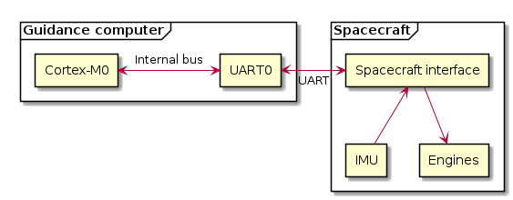
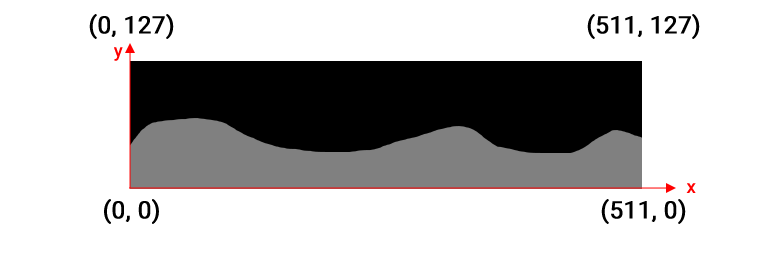
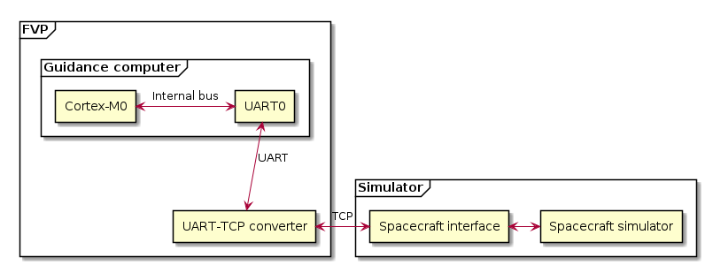

System overview¶
This section contains a detailed specification of the landing procedure, the components of the system and some other fun stuff.
If you need some inspiration for the contest just have a look on this well implemented landing.
{kind=link}
Components¶
Real world¶
The spacecraft we intend to land has an Arm Cortex-M0 based guidance computer. This computer communicates with the spacecraft’s peripherals over its UART port.

Before landing the computer is able to query
the height map of the landing zone,
the position and value of four possible landing zones,
the complete inertial state of the spacecraft.
After the landing has started the spacecraft can only measure its acceleration and angular acceleration. It can affect these values by controlling the engines, so in other words the spacecraft can rotate around its center and accelerate towards its nose. By combining these actuators properly the matter of landing is not rocket science. I mean… it is.
The principles of the landing:

The landing happens in a two dimensional system
Coordinates
The coordinates are Cartesian coordinates
The origin is in the bottom left corner of the landing map
Angles
The angles are in radians
The zero angle is in the direction of the positive X axis
The positive angle direction is counter-clockwise
The angle indicates the direction of the nose of the spacecraft
The acceleration and velocity vectors are in the world coordinate system (not relative to the angle of the spacecraft)
The mass of the spacecraft can be considered constant during landing
The gravity can be considered constant during landing
The thrust applied to the rocket accelerates it towards its nose
The rotational thrust applied to the rocket changes its angular speed
{kind=link}
Simulator¶
As we cannot do real-world tests against our landing software we must use a simulator. The Arm Fixed Virtual Platform (FVP) is used as a model of the guidance computer. It emulated a Cortex-M0 core and its peripherals. A handy feature of the FVP is its capability of make its UART interfaces to work as TCP ports in the outside world. An external script is then used to connecte to the TCP port and simulate real spacecraft’s behaviour.

Basically from the perspective of the landing software the FVP based simulator environment should look the same in every aspect as the real-world landing for the ELM.
Protocol¶
Communication flow¶
Communication is request-response based where the landing software sends an request and the spacecraft (or simulator) sends the response. The response always has the same message type as the request except on error (invalid type or checksum error) when an error response is sent.
The maximum amount of time between messages is 5 seconds. If this value
is exceeded by the landing software the connection will be interrupted and the
round stops.
![@startuml
start
partition Handshake {
repeat
:Receive packet;
if (MAP) then (yes)
:Send map;
elseif (LANDING_ZONES) then (yes)
:Send landing
zones;
elseif (INITIAL_IMU_STATE) then (yes)
:Send initial
inertial state;
elseif (START_LANDING) then (yes)
:Send
acknowledge;
else (Any other message type)
:Send error
message;
endif
repeat while (START_LANDING) is (no)
}
partition Landing {
repeat
:Receive packet;
if (IMU_UPDATE) then (yes)
:Send new
IMU values;
elseif (SET_THRUST) then (yes)
:Update IMU;
:Increment tick;
:Send
acknowledge;
else (Any other message type)
:Send error
message;
endif
repeat while (Has landed) is (no)
}
stop
@enduml](_images/plantuml-26cc526f8f13c4e3ed3f0ad1d2b23f8ff22f8700.png)
An example communication flow could look like this:
Query map
Query landing zones
Query initial inertial state
Send start landing command (end of handshake)
Repeat steps below while not landed
Send set thrust command
Query IMU update
Packet format¶
Each packet has three fields:
Message type: Single byte which identifies the message type and the structure of data field.
Data field: Contains zero to multiple bytes.
Checksum: Single byte which is the inverted XOR-ed value of all previous bytes of the packet. In other words the whole packet (including the checksum) XOR-ed should result
0xff.
For more information see
game.lunarlander.lunarlander.LunarLander.Packet.
Numeric format¶
The numbers are represented as 16 bit signed fixed point values where the integer part’s length is 10 bits and the fractional part has 6 bits. This format is ofter referenced as Scalar. These values are sent in little-endian byte order.
For more information see
game.lunarlander.lunarlander.LunarLander.Scalar
Vectors are two dimensional and represented by two Scalars in the order of X and Y.
Packet types¶
MAP¶
Queries the map of the landing area.
Request
Type value:
0x00Checksum
Response
Type value:
0x00Data format: 512 bytes of height data.
data[x]indicates the height of the ground at the givenxcoordinate. This is the only packet where raw the 8 bit value is used instead of the Scalar format.Checksum
LANDING_ZONES¶
Queries the landing zones and maximum tick count.
Request
Type value:
0x01Checksum
Response
Type value:
0x01Data format:
Four landing zones represented by these fields repeated four times
X coordinate (Scalar)
Value of the landing zone (Scalar)
Maximal number of ticks available for landing on any of the landing zones (Scalar)
Checksum
INITIAL_IMU_STATE¶
Queries the initial inertial state.
Request
Type value:
0x02Checksum
Response
Type value:
0x02Data format:
Position (Vector)
Velocity (Vector)
Acceleration (Vector): The Y Scalar contains the value of gravity as no thrust is applied at the beginning.
Angle (Scalar)
Angular speed (Scalar)
Angular acceleration (Scalar)
Checksum
START_LANDING¶
Indicates that the guidance computer is ready for landing as it has finished handshake phase and starts the landing phase.
Request
Type value:
0x03Checksum
Response
Type value:
0x03Checksum
IMU_UPDATE¶
Queries the differencial inertial values: the acceleration vector and the angular acceleration.
Request
Type value:
0x04Checksum
Response
Type value:
0x04Data format:
Acceleration (Vector)
Angular acceleration (Scalar)
Checksum
SET_THRUST¶
Sets the thrust values and increments the tick index. This message updates the IMU. Following steps happen on the processing of this message.
Limiting thrust values into the valid range
0.0 <= main_thrust <= 8.0
-1.0 <= rotational_thurst <= 1.0
Applying rotational thrust
Set angular acceleration
Adjust angular speed by angular acceleration
Adjust angle by angular speed
Applying main thrust
Set acceleration in the direction of the previously calculated angle
Adjust velocity by the acceleration
Adjust positition by the velocity
Making a long story short first the angle is set then the position using the new
angle an the thrust. For more information see
game.lunarlander.lunarlander.LunarLander.Imu.tick()
Request
Type value:
0x05Data format:
Main thrust (Scalar)
Rotational thrust (Scalar)
Checksum
Response
Type value:
0x05Checksum
ERROR¶
Request
Type value:
0xffChecksum
Response
Type value:
0xffChecksum
Conditions of successful landing¶
All the following conditions should be met by the landing software otherwise the round will get zero as score.
Landing velocity:
Horizontal:
-0.5 <= velocity_x <= 0.5Vertical:
-1.0 <= velocity_y <= 0.0
Landing angle:
(90 - 15) <= angle <= (90 + 15)in degrees (note: the angles are in radians in the system)Landing zone:
(landing_zone_x - 2.0) <= position_x <= (landing_zone_x + 2.0)Tick count:
tick_count < maximal_tick_countTime:
The maximum amount of runtime for the landing is
10secondsThe maximum idle time between messages is
5seconds
For more information see
game.lunarlander.lunarlander.LunarLander.evaluate_landing().
{kind=link}
Score formula¶
The score formula has three components.
Distance from landing zone: linear between the following X coordinates
position_x == landing_zone_x - 2.0: 0 pointsposition_x == landing_zone_x: 100 pointsposition_x == landing_zone_x + 2.0: 0 points
Ticks took the land: linear between the following tick counts
tick_count == 0: 100 pointstick_count == max_tick_count: 0 points
Then the tick component is multiplied by the value of the landing zone. The
theoretical maximum is 30 + (70 * landing_zone_value).
score_distance = (2.0 - distance_from_landing_zone) / 2.0 * 100
score_tick = (max_ticks - tick_count) / max_ticks * 100
score = score_distance * 0.3 + (score_tick * 0.7 * landing_zone_value)
Starting development¶
First you should compile the example project as it’s described in Example C project. This step results in a binary that prints a message to the VGA console and goes into an endless loop in the main function.
Of course you need more to land the spacecraft so the next step would be to implement the communication protocol and the landing algorithm.
For testing you use the Python based landing simulator. Feel free to create new maps and configurations to be able to test corner cases. The final tests will run on the spacecraft after you upload your landing software. However the test cases are classified and not available for the developers.